<title>第 22 章　Fin 的現代工程實務案例研究 — 《可觀測性工程》第二版</title>
<link rel="stylesheet" href="style.css">

<nav class="chapnav">
    <a href="ch21.html">← 上一章</a>
    <a href="index.html">目錄</a>
    <a href="ch23.html">下一章 →</a>
  </nav>
<main>
  <header class="masthead">
    <span class="eyebrow">Observability Engineering · Second Edition</span>
    
    <h1 class="title serif">第 22 章<br>Fin 的現代工程實務案例研究</h1>
    <div class="rule"></div>
  </header>

  <h3 class="subsection">本章由 Fin 資深產品工程師 Kesha Mykhailov 撰稿</h3>
<h2 class="section serif">Fin 資深產品工程師</h2>
<h3 class="subsection">來自 Charity、Liz、George 與 Austin 的說明</h3>
<p>在探討可觀測性使用案例的最後,我們要看看本書討論過的許多概念,是如何在現實世界的工程團隊中融合為一體。本書前面各章分別涵蓋了個別概念或情境,以說明可觀測性在現代系統中如何被有效實踐。但我們認為,最好的方式是展示這些概念與實務如何整合起來,為頂尖軟體公司裡的真實團隊帶來實質的成果改變。</p>
<p>在本章中,Kesha Mykhailov 分享了 Fin 團隊如何轉變其觀測與運營 Fin.ai（他們設計用來處理客服互動的 AI 代理）方式的非凡歷程。雖然最初的用戶體驗以緩慢與挫折感為特徵,但本章詳述的努力最終使 Fin 躍升為該領域領先的 AI 代理。對 Fin 而言,這場逆轉的核心在於找到衡量用戶體驗的方法,並將每一項變更、實驗與優化都回扣到那項單一衡量指標上。</p>
<p>本章改編自這則故事最初以會議演講形式呈現的內容。我們在改編過程中,盡可能保留 Kesha 原本的敘事語氣。</p>
<p>當我們公司（前身為 Intercom）著手打造 Fin 時，我們的主要目標無非是打造一個真正具有革命性的客戶服務代理。</p>
<p>這樣一個代理的主要工作，是代表我們客戶回答終端用戶的問題。在 AI 時代，Fin 的客戶堪稱真正的先驅：他們正在轉型自己的支援作業，將重複且瑣碎的對話交給 Fin 處理，讓支援團隊能騰出心力，去處理更複雜、更棘手的請求。</p>
<p>一旦 Fin 在與終端用戶對話中回答了問題，我們就會將該對話視為已解決。因此，Fin 在被觸發時能夠成功解決的對話百分比，是最重要的效率指標——我們稱之為解決率。</p>
<h2 class="section serif">提升解決率</h2>
<p>自然而然，我們的客戶有誘因去提供高品質的內容，讓 Fin 能夠據以提供準確的答案，藉此提升 Fin 的解決率。另一方面，我們也努力提升 Fin 的效率，因為我們只會針對實際獲得解決的對話向客戶收費。</p>
<p>這種「利益一致」正是讓 Fin 成為頂尖客戶服務代理的秘訣。自 Fin 於 2023年 3 月推出以來，其解決率一直穩定地以每月約一個百分點的速度成長，如圖22‑1 所示。而這並非經過刻意調整、用來吸引眼球的行銷數據；這是橫跨所有使用 Fin 的客戶所平均出來的真實訊號。</p>
<figure class="plate">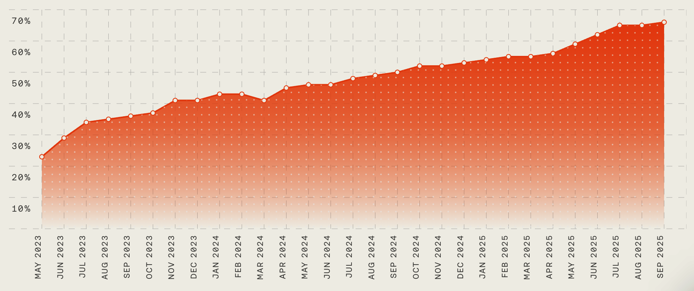
<figcaption>圖 22‑1。Fin 的平均解決率呈現逐月穩定成長的趨勢。</figcaption></figure>
<p>解決率並不是容易改善的指標。我們必須讓 Fin 從單一 LLM 呼叫演變成一個複雜的代理系統，能夠遵循客戶指引、調用動作並完成任務。</p>
<p>在任何時刻，我們都會在營運環境中同時進行數十個 A/B 測試，用於新增或改進這些強大的功能。單就每一項個別測試而言，對解決率的提升只有一小部分百分點而已。正是透過長期不斷堆疊這些改進，才達成如今穩定的成長。這樣的演進是有代價的：新增的功能會增加 Fin 處理查詢所需的時間。雖然我們一直有關注 Fin 的延遲，但我們刻意將功能與效率的優先順序放在速度之前。</p>
<h2 class="section serif">在不犧牲效率的前提下提升速度</h2>
<p>2025 年初，我們開始收到既有客戶與潛在買家的抱怨，指出 Fin 速度太慢。儘管我們有既定的策略，我們仍然認真看待客戶的抱怨，並展開一項工程專案，研究如何在不影響效率的情況下加快 Fin 的速度。</p>
<p>要理解發生了什麼事，我們得從工程角度來看 Fin 究竟是什麼：Fin 是建構在Intercom 既有的客戶平台之上，並與既有的支援工作流程深度整合。因此，Fin 是一個複雜的分散式系統，在處理任一互動時會涉及多筆網路交易。如圖22‑2 所示的範例中，一個像是「我要如何啟用我的帳戶？」這樣簡單的用戶問題，會產生數個背景處理請求，這些請求以不同速度使用 LLM，以便回傳正確的解決方案。</p>
<figure class="plate">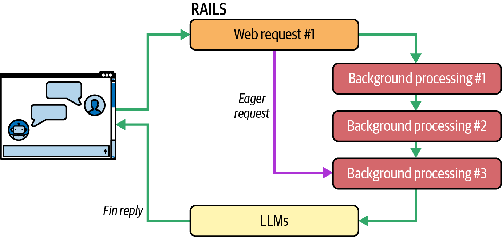
<figcaption>圖 22‑2。Fin 是一個複雜的分散式系統，處理任一互動都需要多筆交易。</figcaption></figure>
<p>除此之外，Fin 也在不斷演進。來自 20 個不同工程團隊的數百位工程師，直接對處理 Fin 互動的程式碼進行變更。在 Fin，發布就是我們的心跳——即使是在一個普通的星期五，我們的心跳頻率也達到每天約 100 次個別變更發布。這種變更速度正是真正複雜性的來源。</p>
<p>隨著客戶抱怨浮現，工程師們開始著手處理。優化用的 pull request 接連提出，許多圖表顯示 Fin 各個元件都有顯著的改善。但我們的客戶與潛在客戶想要的更多。</p>
<p>情況逐漸明朗：雖然我們專注於個別元件的性能，卻缺乏一個能代表終端用戶等待 Fin 回覆時間的訊號。為了深入體會客戶的感受，並以與他們完全相同的方式體驗那種緩慢，我們決定呈現一個端到端的訊號：從用戶訊息送出，到Fin 回覆的第一個 token 在 Fin Messenger 中渲染出來的這段時間。</p>
<h2 class="section serif">於是，<span class="nowrap">「首個 token 時間」</span>誕生了</h2>
<p>在前端測量的「首個 token 時間」，準確地代表了客戶的體驗。首個 token 時間是一種用來反映客戶體驗的度量方式：它衡量的是客戶提交問題到回覆中第一個字元被渲染出來之間的時間。換句話說，這是客戶提出問題到感知答案正在被回傳之間所經過的時間。</p>
<p>從那時起，我們對系統所做的每一項變更都必須對「首個 token 時間」產生正向影響，如圖 22‑3 所示。</p>
<p>我們的工程師能夠回答「是什麼」的問題（例如「首個 token 時間的中位數是多少？」），但無法理解背後的「為什麼」，因為他們無法將這個高階訊號對應到自己正在處理的程式碼上。我們新的追蹤資料缺乏工程師深入探究根本原因所需的細節。</p>
<p>在我們試圖體會客戶感受的同時，我們卻與自己的工程師失去了聯繫。但失敗也是過程的一部分，我們確實從這次經驗中學到了一些東西：我們清楚了解了為什麼最初優化 Fin 速度的嘗試並未成功。</p>
<figure class="plate">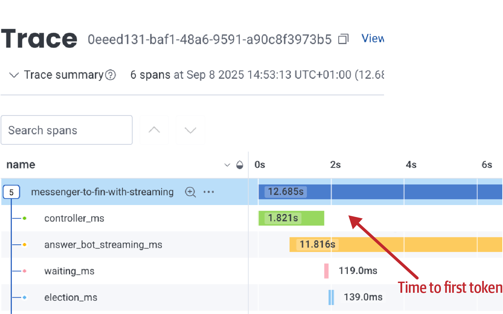
<figcaption>圖 22‑3。這個分散式追蹤瀑布視圖顯示了到第一個 token 的時間。</figcaption></figure>
<p>如果你思考像 Fin 這樣複雜系統的分散式追蹤，你可能會天真地認為，交易隨時間的變化會像圖 22‑4 那樣。</p>
<figure class="plate">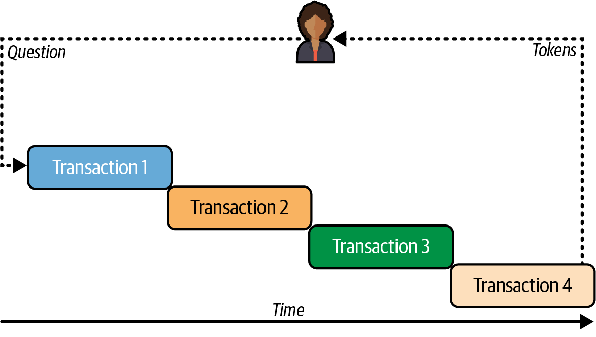
<figcaption>圖 22‑4。這是回傳第一個 token 所需條件的過度簡化示意圖，圖中所有交易都必須依序完成，才能回傳第一個 token。這並不符合我們系統的實際情況。</figcaption></figure>
<p>在這裡，每筆交易的「開始」都與前一筆交易的「結束」對齊，回答的 token在最後串流回傳給用戶。但實際上情況複雜得多，過程更像圖 22‑5 所示。</p>
<p>代理為了開始回應用戶所做的工作，未必與每個服務中實際發生的底層交易保持一致。</p>
<p>隨著我們提升個別元件的速度，我們並不清楚哪些元件位於關鍵程式碼路徑上。它們究竟是直接阻擋 Fin 互動的進展，還是屬於 Fin 互動轉移到下一筆交易之後才進行的處理？</p>
<figure class="plate">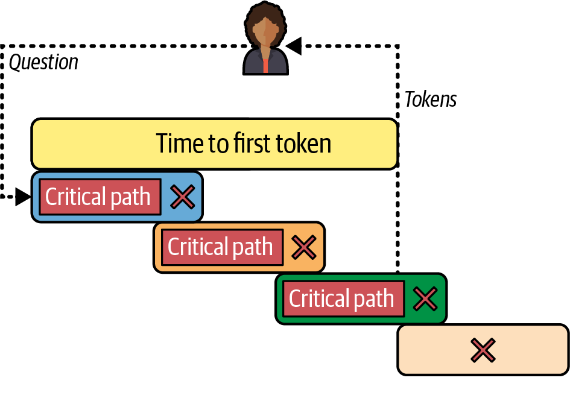
<figcaption>圖 22‑5。實際上，平行交易不必完全結束就能回傳第一個 token。根據關鍵路徑內的控制流程，有些交易可能在前一筆交易進行到一半時就開始，而有些交易則根本不在關鍵路徑上。</figcaption></figure>
<p>要理解這樣的系統，分散式追蹤必須納入低階遙測，以精確辨識控制流程在何處轉移到不同的交易，並能夠識別位於關鍵路徑上的項目。我們必須從頭開始，建立附加低階跨度於交易跨度上的新分散式追蹤，如圖 22‑6 所示。有了新的追蹤，我們不僅能藉由回答「是什麼」來體會客戶的感受，也讓工程師有辦法回答「為什麼」。</p>
<p>有了這項新的遙測作為後盾，我們得以快速前進，並有意義地改善 Fin 的延遲。</p>
<figure class="plate">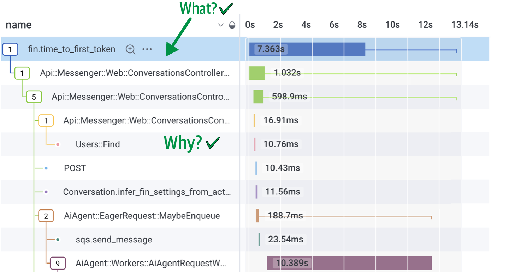
<figcaption>圖 22‑6。透過重新檢測分散式追蹤跨度，使其包含控制流傳遞到下一個交易時的資訊，工程師得以同時看清發生了什麼事，並理解為何首個 token 的生成時間受到影響。</figcaption></figure>
<h2 class="section serif">加速 Fin</h2>
<p>讓我們來看看我們實作過最具影響力的優化之一：預先請求（eager request）。</p>
<p>不出所料，Fin 互動中最耗時的部分，是基於 LLM 的代理式工作流程對多個模型進行呼叫。但即使在互動進入這個階段之前，還有一大堆工作要做，例如把用戶的訊息存進資料庫、依序執行客戶自行設定的工作流程、判斷這次對話是否需要讓 Fin 介入等等。</p>
<p>如果我們跳過那個部分，提前呼叫基於 LLM 的處理呢？「正常」的請求流程很有可能會改動 payload，進而影響提示詞（prompt）。但如果沒有改動，那麼等我們進入互動中基於 AI 的部分時，我們可能早已手握一個由 LLM 產生的答案，如圖 22‑7 所示。</p>
<p>事實證明，在大多數情況下，payload 都維持不變，因此我們能夠更快地將回應串流回傳給用戶。光是這項優化，就幫我們把首個 token 生成時間的中位數縮短了兩秒。</p>
<figure class="plate">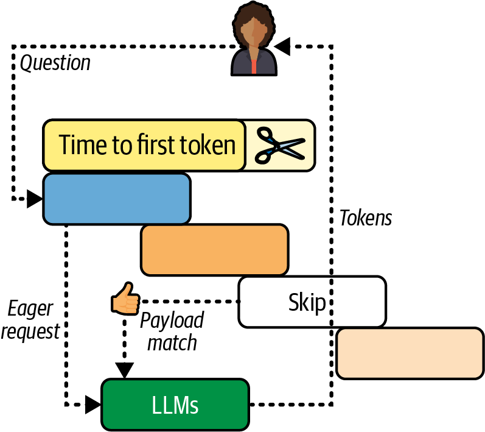
<figcaption>圖 22‑7。我們建立了「積極請求」的概念，用以優先處理耗時的 LLM 呼叫。由於這些呼叫需要最長的完成時間，因此在控制流程中優先處理對 LLM 的呼叫，讓我們大幅降低了首個 token 的回應時間。</figcaption></figure>
<p>但讓 Fin 變得更快只是工作的一部分。真正的挑戰在於長期維持這些速度上的提升，尤其是考量到每天都在發布大量變更的頻率。我們知道效能終究會再度下滑，因此需要一種方法來主動管理速度變慢的問題。</p>
<p>由於模型的可用性難以預測（供應商中斷、每日的週期性波動、容量不足等），單純基於閾值的警報會產生過多雜訊。我們決定採用基於事件的服務水準目標（SLO），追蹤互動速度快於新建立基準線的百分比，如圖22‑8 所示。</p>
<figure class="plate">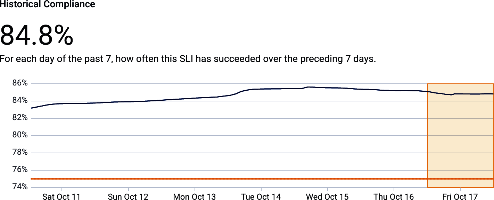
<figcaption>圖 22‑8。七天內首個 token 回應時間 SLO 的每日達標情況。</figcaption></figure>
<p>專注於我們長期的 SLO 合規趨勢，有助於我們聚焦在有意義的效能劣化，而不被間歇性、短暫的高峰所分散注意力。</p>
<h2 class="section serif">財務部門加入戰局</h2>
<p>到這個階段，故事原本可以有個美好的結局。我們透過改善 Fin 的延遲讓客戶滿意，工程師也擁有了一個可信賴的信號，能夠揭露真實的影響。這個以客戶為中心的信號，與底層資料相互連結，讓他們能夠在 SLO 被違反時立即進行調查。</p>
<p>然而，我們的積極請求（eager‑request）優化仍有一個問題尚待解決。當一個「正常」請求確認 payload 相符時，我們會串流傳送由積極請求流程預先準備好的回覆。但如果 Fin 一開始就從未參與處理某個終端使用者訊息的話，會發生什麼事？</p>
<p>我們允許客戶設定複雜的多步驟工作流程，其中 Fin 只是眾多步驟之一。但有時候，客戶會希望根據特定條件（例如涉及付款的敏感主題）將某個對話直接轉接給真人客服。在這種情況下，正常流程會中止，而所有作為積極請求流程一部分所發出的 LLM 請求就會被浪費掉，如圖 22‑9 所示。</p>
<figure class="plate">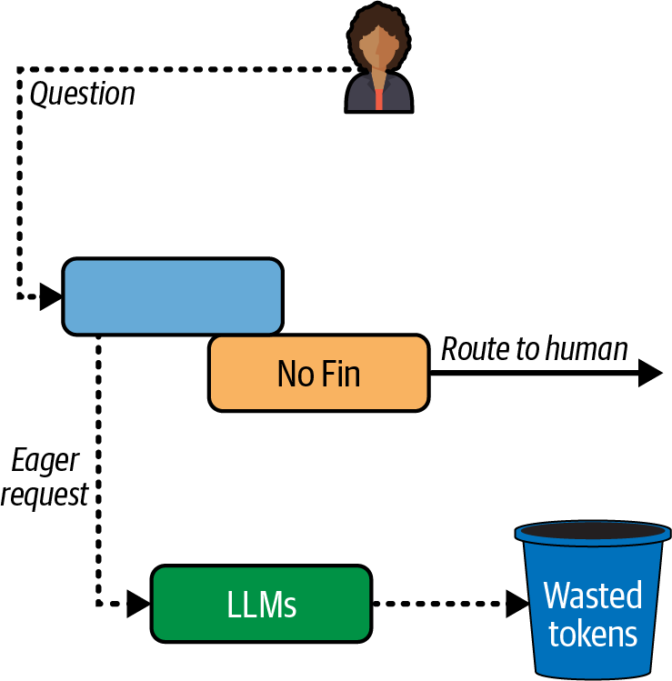
<figcaption>圖 22‑9。用戶可以設定繞過 Fin 使用的工作流程。在這些情況下，積極請求仍可能作為控制流程的一部分被發出，但這些 token 卻未被使用。這正是積極請求實作中的一項故障。</figcaption></figure>
<p>由於在處理該終端使用者訊息時並未有 Fin 的互動，因此沒有發出任何延遲指標。結果，這個積極請求的故障便悄悄地未被察覺</p>
<p>雷達。工程團隊是在財務團隊做季度審查時發現 Fin 的毛利率下降，才得知這個問題的。我們過於專注於 Fin 的延遲，反而忽略了因此產生的額外營運成本，失去了對自身業務狀況的掌握。</p>
<p>幸運的是，多虧了我們既有的優秀追蹤機制，我們得以識別並修正這個問題，迅速找出所有不需要觸發即時請求的情況。為了驗證修正結果，我們使用了與財務團隊量化額外 LLM 成本時相同的查詢，如圖 22‑10 所示。</p>
<figure class="plate">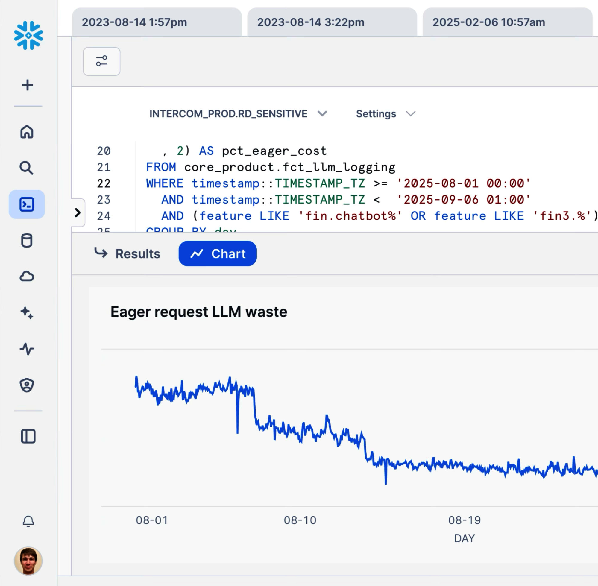
<figcaption>圖 22‑10。我們得以查詢追蹤資料，找出即時請求被意外觸發的情況。多虧了我們精細的檢測，我們才能量化成本，並藉此識別這種情況發生的時機。</figcaption></figure>
<p>我們很高興觀察到 LLM 浪費百分比下降，證實了我們的修正成效。但我們也想持續關注這項訊號。</p>
<p>前述查詢的問題在於它需要花費數分鐘才能執行完畢。更重要的是，資料倉儲中的資料是每日更新一次，重新整理需要數小時。雖然這對財務團隊（以季為週期運作）來說沒問題，但對工程師而言並不夠好。</p>
<p>工程師需要即時取得其行為的回饋，這是能夠安全地每天發佈數百項變更的重要前提。因此，我們把 Fin 每次互動的成本加入到既有的分散式追蹤中，如圖22‑11 所示。</p>
<figure class="plate">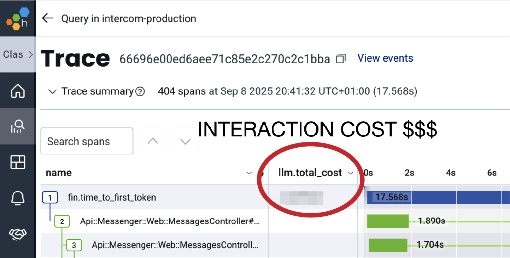
<figcaption>圖 22‑11。由於前述查詢對即時使用而言太慢，我們對追蹤進行檢測，加入一個屬性，用來量化每一個請求的 LLM 總成本。</figcaption></figure>
<p>當然，我們在其上設置了服務水準目標（SLO），確保一旦 Fin 的成本出現劣化就能收到通知。</p>
<h2 class="section serif">同理心</h2>
<p>我們的客戶很滿意，因為我們能夠感同身受，以和他們完全相同的方式體驗Fin 的速度。我們也透過呈現以業務為中心的訊號，與業務部門建立起同理心。Fin 每次互動的成本與每次解決問題的成本高度相關，而後者正是我們最終向客戶收費的依據。關鍵在於，無論是以客戶為中心還是以業務為中心的訊號，都連結到高度詳細的遙測資料，讓工程師得以調查並修復問題，這也讓他們感到滿意。</p>
<p>有人可能會認為我們的經驗與心得是我們獨有的，但事實上，這個做法很容易被推廣到其他情境。</p>
<p>如圖 22‑12 所示，Rasmussen 安全模型解釋了社會技術系統如何逐漸偏移向失效（關於社會技術系統的更多內容，請參閱第 24 章）。</p>
<figure class="plate">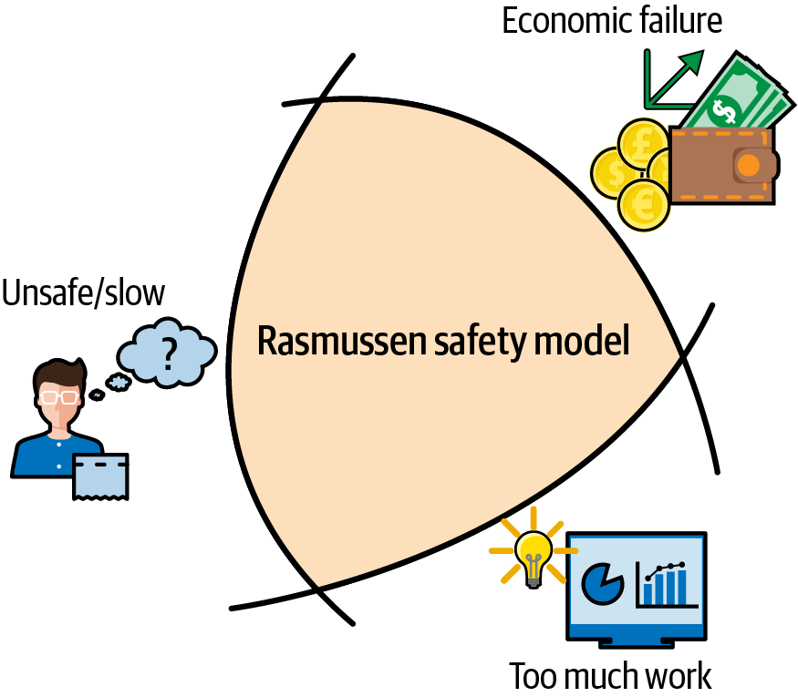
<figcaption>圖 22‑12。Rasmussen 安全模型三角形（或稱 Rasmussen「偏移向危險」模型）是一個概念圖，說明系統如何朝失效方向移動。它代表了安全操作的邊界（通常是不可見的），以及組織、財務與效率壓力如何持續促使操作者「偏移」並最終跨越這個邊界。</figcaption></figure>
<p>該模型主張，每個系統都在三個邊界之內運作：</p>
<p>可接受性能邊界</p>
<p>一旦跨越該邊界，系統的性能／可用性就會受到影響，導致用戶不滿。</p>
<dl class="deflist"><dt>經濟失效邊界</dt><dd>跨越那條界線，你的業務獲利能力就會面臨風險。</dd></dl>
<p>無法接受的工作負載界線</p>
<p>跨越那條界線，你就有讓工程師承受過大壓力的風險。</p>
<p>對於一般的操作人員來說，這些邊界難以捉摸，也很少被真正理解。但它們確實存在！當事情變得太慢時，你的客戶會抱怨。你的財務團隊清楚知道經濟失敗邊界在哪裡；他們早已向投資人承諾了那個毛利率。最後，除非你為工程團隊配備良好的工具，否則他們可能會在壓力下崩潰，無法提升性能、降低成本。</p>
<p>這正是可觀測性扮演核心角色之處。可觀測性的藝術，在於將這些安全邊界呈現給操作者，並建立即時的回饋迴路，讓他們有能力承擔風險，同時清楚知道自己在 Rasmussen 三角形中的位置。實務上來說，可觀測性的藝術，就是建立一個結合以客戶為中心的信號與以業務為中心的信號的資料集。這些信號必須即時更新，並與高度詳細、低層級的追蹤遙測資料相連結，讓操作者與工程師能夠主動監控並解決問題。</p>
<p>這是可觀測性的最後一哩路，也可以說是最困難的一段。許多團隊過於專注在檢測、遙測流水線與供應商管理上，反而忽略了這一點。很容易陷在實作細節裡，見樹不見林。這時候，可觀測性就會淪為另一個成本中心，你能跟財務團隊談的，就只剩下日誌叢集的成本。</p>
<p>相反地，如果你走完這最後一哩路，可觀測性就能與客戶的滿意度和業務成功緊密連結。好消息是，要做到這一點，唯一需要的就是同理心。你必須深刻同理你的客戶、業務與工程師，理解他們的需求，感同身受地體會他們的痛點。</p>
<p>聽起來或許諷刺，但在 AI 的時代，同理心才是你真正需要的一切。</p>
<h2 class="section serif">結論</h2>
<p>Kesha 在 Fin 的工程故事，體現了本書其餘篇章所要建立的核心理念：可觀測性是一門實務學科，能為真實系統中的真實團隊帶來實際成果的改變。Kesha 的故事並沒有把檢測、追蹤、SLO 與迭代分析當作各自獨立的主題來看待，而是展示了它們如何融合成單一的營運模型，將每一次變更、實驗與優化，都與以客戶為中心的度量指標連結起來。這也讓這項度量指標具備足夠的可除錯性，讓工程師能夠迅速採取行動。</p>
<p>這個故事同時展現了可觀測性的「最後一哩路」：透過即時呈現正確的信號，並提供足夠的低層級脈絡來解釋這些信號為何變動，藉此與客戶、工程師和業務建立同理心。組織之所以能夠學會快速交付而不誤入險境，是因為他們能看見可接受性能、經濟可行性與操作者工作負荷的邊界。有了這些，他們就能在壓力將自己推過界線之前及時修正方向。這個故事具體展現了現代工程團隊如何將可觀測性轉化為一套學習系統。</p>
<p>在本書的下一部分，我們將探討如何由上而下建立組織一致性，讓這類成果得以實現。</p>
<p>到目前為止，本書都是為工程師而寫：那些為程式碼加上檢測、負責維運營運環境服務、努力理解自家軟體在真實世界中究竟如何運作的人。第一篇至第五篇是從實務工作者的角度出發，由下而上撰寫。</p>
<p>第六篇則轉換方向。我們接下來要寫給技術領導者看。</p>
<p>當我們詢問軟體工程社群，可觀測性指引中缺少了什麼，得到的回覆一再重複同樣的故事：花費數百萬美元購入工具卻沒人學會使用、CTO 在後 AI 時代將可觀測性視為無關緊要而放棄、組織內部連最基本的問題都無法達成共識——可觀測性究竟是什麼、它該解決什麼問題、又該由誰負責。這是領導力的問題，不是工具的問題。</p>
<p>技術領導以多種形式存在——資深工程師（staff）、首席工程師（principal）與傑出工程師（distinguished engineer），以及總監、副總裁（VP）、資深副總裁、CTO 及類似職位。我們並不認為這僅僅是高階主管的職責範圍。技術貢獻者同樣影響著這些決策，我們希望這一點能在這幾章中充分呈現。</p>
<p>我們目前所見最大的問題，是一道正在擴大的落差：組織的程式碼交付速度前所未有地快，同時卻逐漸失去對這些程式碼實際行為的掌握。第六篇正是要弭平這道落差——透過更好的決策、更好的回饋循環，以及認真看待這個問題之技術面與人性面的領導力。</p>
<p>第 23 章以一封寫給 CTO 的信作為開場。在 AI 時代，交付程式碼已不再是你最大的限制；如今限制你的，是理解、驗證，以及你的</p>
<p>組織學習速度。本章說明有多少延誤可追溯到未償還的社會技術性技術債，以及可觀測性如何與清償這筆債務相關聯。</p>
<p>第 24 章更深入一層，運用系統思維檢視變革實際上如何在社會技術系統中傳播。大多數組織試圖靠雇用人力或購買工具來擺脫技術債，但這行不通。本章說明真正有效的做法，以及為何可觀測性是一個槓桿點，而不僅僅是一項工具。</p>
<p>第 25 章協助你釐清組織實際需要哪種回饋迴路，接著把這些需求與工具生態系連結起來。同時也會撥開 AI 熱潮的迷霧，讓你專注於成果本身。</p>
<p>第 26 章帶你逐步建立可觀測性投資的商業論證。你的可觀測性是成本中心，還是策略性投資？答案會左右你採購什麼、如何管理，以及如何衡量成效。</p>
<p>第 27 章是一項診斷。如果你的組織正感受到可觀測性工具的成本壓力，這通常只是症狀——你其實是用可觀測性的價格，換來監控的成果。本章協助你找出問題所在，並提出修正方向。</p>
<p>第 28 章是由 UST 雲端顧問全球主管 Rick Clark 客座撰寫的章節。Rick 務實地談論組織變革實際上如何發生，以及在加速組織學習速度的過程中，你將面臨哪些障礙、又該如何跨越。</p>
<p>第 29 章詳細檢視自己建立、購買，還是採用開源方案的決策——探討的是真正的取捨，而非廠商行銷話術版本。</p>
<p>第 30 章討論廠商合作關係。如果你打算購買解決方案，建立合作關係幾乎與技術本身同等重要。本章說明如何設計並執行概念驗證（POC），以及如何與內部利益相關者建立信任與信譽、互惠關係，並對廠商發揮影響力。</p>
<p>第 31 章為實際推動組織全面採用可觀測性的團隊提供實作指引：檢測模式、組織範圍的推行考量，以及大型企業、受高度監管與高安全性產業等常見環境。</p>
<p>第 32 章展望未來。既然程式碼產出的經濟模式已經翻轉，未來幾年會帶來哪些下游影響？技術組織又該如何做好準備因應？我們主張，是時候把嚴謹性的重心從程式碼轉移到系統本身了。</p>

  <footer class="colophon">
    <span>《可觀測性工程》第二版 · 第 22 章</span>
    <span>Fin 的現代工程實務案例研究</span>
  </footer>
</main>
